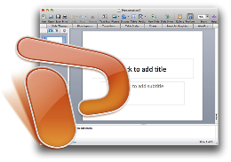
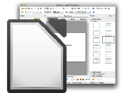
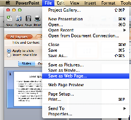
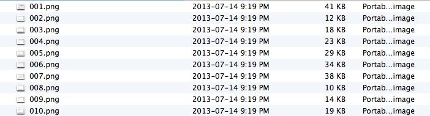
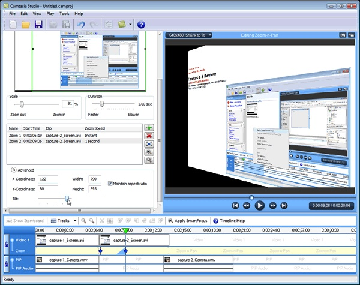
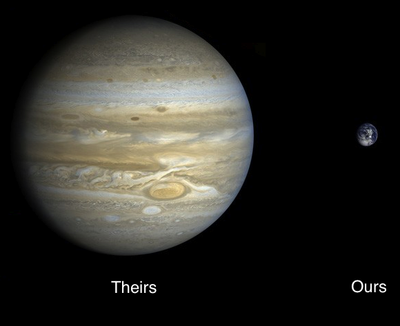

The Japanese wrote haikus...

Shakespeare wrote sonnets...

And we... write PowerPoint
A lot of people blame PowerPoint for bad presentations...
...but that's like blaming fountain pens for bad poetry.


The real problem with tools like PowerPoint...
...is that they aren't web-friendly.


When you export a slideshow to present on the web...

...what you actually get is a bunch of images.
There's no text, just pixels arranged in the shapes of letters.

No hyperlinks.
Nothing search engines or disability aids can read.
And remixing? Forget it.
What's worse, if you want something people can replay
you have to make a screencast...

...which is just as opaque to search engines and disability aids...
...and probably hundreds of times larger than your original slides.
Browsercast is our solution to this problem.
It replays an HTML5 slideshow in your browser with a voiceover.
The playback controls and slide controls are synchronized.
And "View Source" and search work as they should...
<section class="slide">
<img src="haiku.jpg" />
<p>The Japanese wrote haikus...</p>
</section>
<section class="slide">
<img src="sonnet.jpg" />
<p>Shakespeare wrote sonnets...</p>
</section>
<section class="slide">
<img src="worst-powerpoint.jpg" />
<p>And we... write PowerPoint</p>
</section>
...because it's all still web-native HTML.
Links work as they should too...
and you can restyle things using CSS.
The Japanese wrote haikus...
Shakespeare wrote sonnets...
And we... write PowerPoint
|
The Japanese wrote haikus...
Shakespeare wrote sonnets...
And we... write PowerPoint
|
The Japanese wrote haikus...
Shakespeare wrote sonnets...
And we... write PowerPoint
|
What's more, since it's just text and audio...

...it's a fraction of the size of a regular screencast.
All this makes it ideal for mobile devices.
Creating a browsercast is easy.
1. Write a deck.js slideshow.
Creating a browsercast is easy.
2. Record a soundtrack.
Creating a browsercast is easy.

3. Step through the slideshow in time to your soundtrack.
Creating a browsercast is easy.
{
"1": 0.00,
"2": 2.90,
"3": 5.15,
"4": 8.00,
"5": 12.20,
"6": 16.60,
"7": 19.85,
"8": 22.35,
"9": 26.25,
...: ...
}
4. Save the timings in a file.
Creating a browsercast is easy.
<meta name="timings" content="timing-data.json">
5. Put a link to that file in the head of your slideshow.
Browsercast is open source.
if you'd like to help us make it better, please fork our repo.
Thanks for listening.
With thanks to David Seifried,
Jeremy Banks,
David Wolever,
Gabriel Ivanica,
and Rémi Emonet.